In English
EMISIUNEA "EXPOZIŢIA UNIVERSALĂ BRUXELLES" DIN ANUL 1958
Victor Manta, PWO
Acest articol reprezintă o continuare a articolului intitulat "Primii doi sateliţi artificiali ai Pământului pe mărcile poştale româneşti", apărut pe acest site la începutul anului 2015. El a fost publicat şi in numărul nr 6(35) / 2014 al revistei philatelica.ro.
Introducere
Am devenit colecţionar de mărci poştale româneşti cam la doi ani după ce a aparut seria care este obiectul prezentului articol. Deoarece ea nu se mai vindea in magazinele filatelice, am vazut-o pentru prima dată la colecţionarii epocii, ea fiind oferită la preţuri care depăşeau posibilităţile mele, motiv pentru care am tot amânat să mă ocup de ea. Nu ştiam atunci că voi intra în posesia unor piese interesante ce fac parte din această serie abia în anul 2014, în momentul în care a început să mă intereseze din nou această emisiune ieşită din comun.
Expoziţia Universală de la Bruxelles din 1958
Această expoziţie a reprezentat întoarcerea la expoziţiile mondiale după o întrerupere de 18 ani datorată celui de al Doilea război mondial. Expoziţia s-a desfăşurat între 17 aprilie - 19 octombrie 1958 în zona tradiţională de expoziţii a capitalei belgiene Bruxelles. Cu această ocazie a fost construit celebrul Atomium, înalt de 102 m şi format din 9 sfere cu un diametru de 18 m, conectate astfel încât să formeze imaginea unui atom de fier, mărit de 65 de miliarde de ori. Această imagine apare pe marca comemorativă emisă de gazdele expoziţiei, Mi Nr. 1091, Fig. 1.
Fig. 1O serie frumoasă şi o coliţă, ambele dedicate expoziţiei, au fost emise în ziua deschiderii acesteia de către Ungaria, Mi. 1519 - 1526. Mi. Block 27. Vă arătăm mai jos una dintre mărci, care prezintă un reper binecunoscut al Bruxelles-ului, sculptura Manneken Pis, datorată lui Hiëronymus Duquesnoy cel Bătrân şi inaugurată în anii 1618 - 1619.
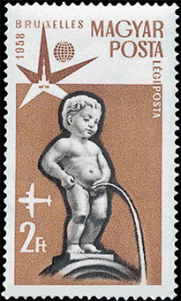
Fig. 2Războiul zis rece dintre cele două supraputeri ale momentului s-a desfăşurat în mod paşnic la această expoziţie, în pavilioanele poziţionate faţă în faţă ale SUA şi URSS. Sovieticii au prezentat în centul pavilionului lor impresionant o copie a lui Sputnik I, precum şi alte realizări tehnologice şi stiinţifice. Americanii au replicat punând accentul pe bunuri de larg consum, o impresionantă paradă a modei, precum şi cu noul lor calculator IBM 305 RAMAC, unul dintre ultimele modele bazate pe tuburi electronice, dar primul cu două discuri hard, ansamblul cântărind totuşi o tonă. În Fig. 3 şi Fig. 4 apar pe mărci imaginile pavilionului sovietic (Mi. 2068) şi ale celui american (Mi. 724), emise de ţările respective pe data de (sau in jurul lui) 17 aprilie 1958.
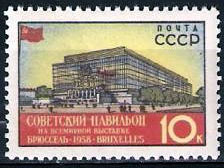
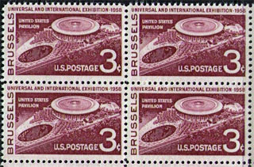
Prezenţa României
România, conform directivelor decise cu doi ani înainte la Moscova, ar fi trebuit să îşi arate realizările într-un pavilion propriu. Acest obiectiv nu a fost atins, dându-se apoi vina pe costurile, considerate prohibitive, ale construirii unui pavilion în Vest. Reprezentanţii României au fost în final adăpostiţi, alături de alte ţări aflate în situaţia lor, în marele pavilion al Naţiunilor Unite, pe care îl arătăm în Fig. 5. În stânga sus se vede o mică parte a Atomium-ului.
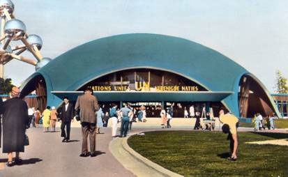
Fig. 5Activitatea "filatelică" a României la Expo '58
Expo '58 s-a bucurat de un mare succes de public. Pe toată duratei ei, ea a fost vizitată de peste 40 de milioane de oameni, iar în ziua de vârf peste 700.000 i-au trecut porţile. La standurile României, spre deosebire de cele ale altor zeci de expozanţi, nu puteau fi cumpărate materiale filatelice româneşti dedicate evenimentului, lucruri care desigur că nu le-au scăpat "tovarăşilor cu funcţii de răspundere", delegaţi pentru diverse motive la faţa locului. Pentru ei era evident că vânzarea de "hârtiuţe", practicată de alţii, era un mijloc mult mai simplu de a se pune mâna pe preţioasa valută convertibilă, decât de a vinde produse agricole, alimentare, sau zeci de mii de cetăţeni ai republicii populare.
În consecinţă nişte "băieţi deştepţi" (erau şi pe atunci) de la Direcţia Generală a Poştelor au fost somaţi să găsească o soluţie simplă, ieftină şi, în special, rapidă. Sub presiune aceştia au ajuns la o "găselniţă genială", şi anume să supratipărească cele 2.593 de coli nevândute ale emisiunii din 1957 “Sateliti artificiali ai Pămîntului”, emisiune de care ne-am ocupat în articolul precedent. Emisiunea aceasta se "potrivea" cu scopul propus, deoarece aparent arăta "O mare victorie a ştiinţei şi tehnicii universale" (conform textului de pe vinietă), chiar dacă în fapt sublinia poziţia de satelit al României în raport cu marele ei vecin şi "eliberator" din Est. Mai rămânea doar să i se adauge emisiunii, prin simpla supratipărire, "culoarea locală" belgiană, culoare care, întâmplător sau nu, va fi cea roşie. Pentru aceasta a fost "folosită în mod creativ" însăşi frumoasa siglă a expoziţiei, pe care o arătăm în Fig. 6.
Fig. 6Emisiunea Expo '58 Bruxelles în România
Din articolul d-lui ing. Popovici, menţionat mai jos, aflăm că distribuirea emisiunii la oficiile şi ghişeele filatelice se făcea numai pe tripticuri, acestea fiind extrase din coală fie pe orizontală, fie pe verticală. Din această informaţie eu am înţeles că, spre deosebire de distribuirea făcută la Brixelles în cadrul expoziţiei, nu se puteau cumpăra în ţara lor de origine unităţi mai mari din coală decât tripticurile. Aceasta explică eventual de ce nu am văzut la filateliştii vremii respective unităţi mai mari şi, de asemenea, de ce blocurile din Fig. 7 la Fig. 10 eu le-am găsit de cumpărat în străinătate. Noi, filateliştii de atunci, nu ne miram de nimic, fiind demult obişnuiţi cu privaţiunile de toate felurile.
Poziţionarea pe coală a tripticurilor supratipărite
Încep prin a vă arăta nişte tripticuri care au fost obliterate de complezenţă, cu o ştampila care are ca dată chiar ziua în care emisiunea în cauză a fost pusă în circulaţie, şi anume 20 iulie 1958. Această dată este ulterioară cu peste trei luni celei când expoziţia îşi deschisese porţile şi pentru care zeci de administraţii poştale au venit pregătite cu producţia lor, aşa cum am arătat prin exemple înainte.
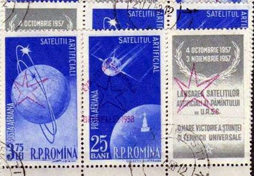
Fig. 7Cei care au citit articolul meu precedent îşi amintesc faptul că coala de tipar a emisiunii Sateliţii artificiali I şi II era relativ complexă, deoarece randurile cu numerele 4, 5 şi 6 erau inversate în raport cu restul. Deşi toate supratiparele au fost aplicate în aceeaşi direcţie, aceasta a dus la faptul că pe rândurile menţionate supratiparele apar ca fiind întoarse în raport cu imaginile de sub ele. În realitate desigur că imaginile de sub supratipare erau inversate în raport cu supratiparele însele. Pentru a avea o imagine de ansamblu asupra compoziţiei colii de tipar, vă prezentăm în Tabela 1 o imagine schematică a acestei coli. Această imagine ne va ajuta în cele ce urmează să poziţionăm pe coală blocurile aflate în posesia autorului, pe care acesta le-a cumpărat pentru a putea scrie prezentul articol. Desigur că tabela poate servi la poziţionarea oricăror părţi din colile respective, acesta fiind motivul pentru care am compus-o şi o public.
Tabela 1
Vom începe prin a plasa chiar tripticul arătat în faţă în fig. 7. Aici a fost evident să poziţionăm înscripţia "EXPOZITIA UNIVERSALA", care are o formă de vârf de săgeată, în direcţia "în sus". Vom proceda şi pe viitor, atunci când lucrurile vor fi mai puţin evidente, în acelaşi fel. Este vizibil că, deoarece în partea de jos apare o parte din marginea de coală, acest triptic face parte din unul dintre cele 9 tripticuri aflate pe rândul 1. Frecvenţa teoretică totală de apariţie a acestor tripticuri este de 9/81, sau de 11%, la un total de 210.033 de perechi complete de tripticuri.
Un alt exemplu relativ simplu este prezentat în Fig. 8.
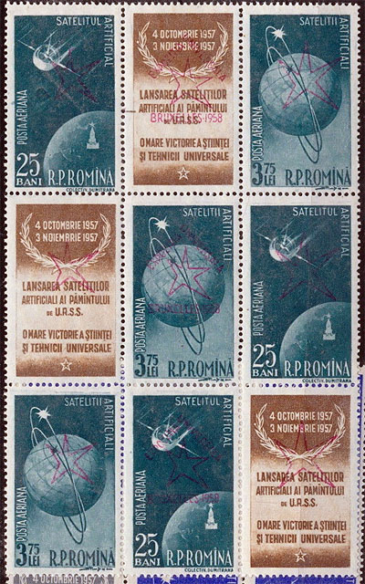
Fig. 8.Este vorba de un bloc vertical de 3 tripticuri supratipărite, marcate în Tabela 1 cu litera "N", de la Normal (neinversat). Ele pot apărea numai pe rândurile 3 + 2 + 1 sau 9 + 8 + 7, în total 6 blocuri de 3 tripticuri, din totalul posibil de 9 asemenea blocuri pe coală.
În Fig. 9 avem o situaţie care pare puţin mai încurcată, deoarece aparent nu se mai ştie unde e susul şi unde e josul.
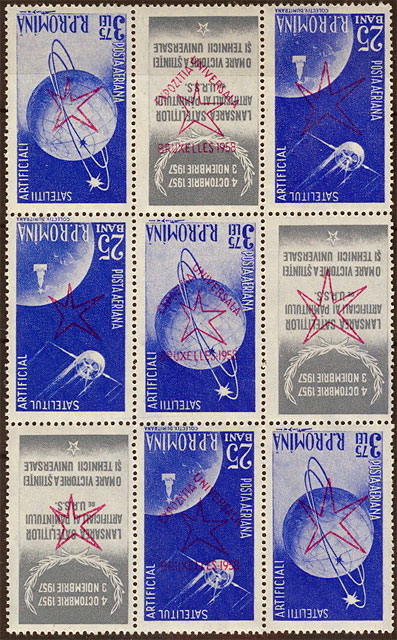
Fig. 9În conformitate cu sfatul dat mai sus, am poziţionat blocul de 3 tripticuri astfel încât săgeata formată de inscripţia "Expozitia universala" să arate în sus. Acum se vede uşor ca aceste blocuri nu pot proveni decât din liniile 6 + 5 + 4, marcate Inv, de la Invers. Se vede că numărul pe coală al acestor blocuri de 3 tripticuri este la jumătate în raport cu cel pentru blocurile din Fig. 8.
În Fig. 10 şi Fig. 11 arătăm probabil cele mai interesante combinaţii şi anume cele în care avem două tripticuri în bloc de 2, dintre care unul e drept şi celălalt ranversat.
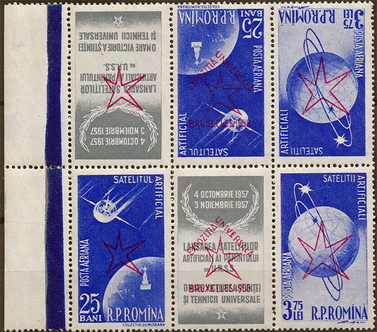
Fig. 10Orientând corect blocul tête - bêche, care apare cu marginea de coală în stânga, constatăm că pentru cel din Fig. 10 nu există decât o singură poziţie în care să se potrivească în Tabela 1 si anume A4 + A3. Este, de altfel, 1 din cele 9 poziţii posibile dacă nu ar fi avut margine de coală. Numărul total de asemenea tripticuri este egal cu cel al numărului total de coli supratipărite, adică de 2.593.
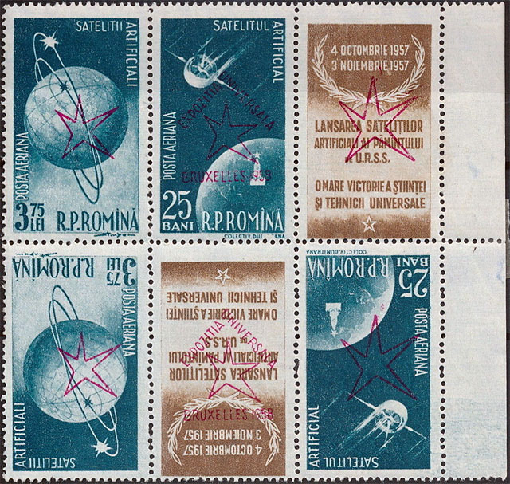
Fig. 11Pseudo-perechea blocului din Fig. 10 este arătată în Fig. 11, fiind vorba tot de un bloc tête - bêche unic pe coală, poziţionat I7 - I6 în Tabela 1.
O idee despre raritate şi preţuri
Ne aflăm cu siguranţă în faţa unei emisiuni în care o mulţime de combinaţii mai largi sunt destul de rare. Este de presupus că din combinaţiile arătate în Fig. 7 până la Fig. 10 nu ar exista mai mult de câteva sute de piese din fiecare.
O pereche de tripticuri neuzate cu supratipar în poziţie N este cotată în catalogul Michel la 80 Euro, iar una cu supratipar Inv este cotată 140 Euro. Perechile tête - bêche, ca cele din Fig. 9 şi Fig. 10, sunt cotate împreună 300 Euro, deci cu 80 Euro mai mult decât perechile N şi Inv separate fizic. Pentru restul de combinaţii nu ne rămâne decât să încercăm să deducem, prin compararea cu mărcile cotate, preţurile lor de amator. Să notăm în trecere că preţurile de catalog nu reprezintă preţuri de vânzare, lucru pe care îl ştie orice filatelist avizat.
Plicurile prima zi (FDC)
În acest domeniu există pe Web un excelent articol, din care ne permitem să cităm doar concluziile: "Setul de doua fdc-uri “Expozitia Universala Bruxelles 1958″a fost obliterat cu una din stampilele speciale considerata ciudatenie de catre marcofili, deoarece nu are inscrisa nici data introducerii in circulatie, nici mentiunea “Prima zi a emisiunii”, iar locul stampilarii este atestat ca fiind “Bruxelles” si nu pe teritoriul statului emitent, asa cum prevad normele in vigoare ale Uniunii Postale Universale". Sursa
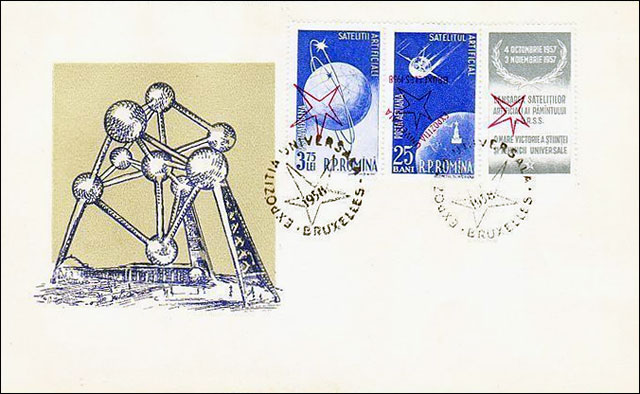
Fig. 12Constatăm deci că şi în materie de FDC-uri (ca cel din Fig. 12) a domnit acelaşi spirit de improvizaţie şi de goană după câştiguri uşoare, aşa cum a fost cel manifestat în domeniul mărcilor poştale respective.
Filigrane
Am prezentat filigranele folosite (preluate din Catalogul Mărcilor Poştale Româneşti, 1974) în articolul precedent şi am dat în el şi un exemplu de folosire a filigranului XVII.
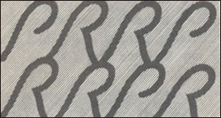
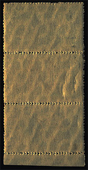
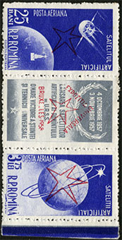
În Fig. 13 apare filigranul XVIII, iar în Fig. 14 reversul prelucrat al imaginii din Fig. 15, în care am pus în evidenţă, folosind tehnici de prelucrare de imagini, filigranul încrustat în structura hârtiei.
O curiozitate filatelică, reconstituită
D-lui Cornelius Ionescu (mulţumiri!) îi datorez faptul că am putut citi foarte interesantul articol al dl. Ing. Mihail Popovici, intitulat "O varietate obişnuită, dar rar întâlnită la emisiunea filatelică SATELIŢI ARTIFICIALI AI PĂMÎNTULUI cu supratipar EXPOZIŢIA UNIVERSALĂ BRUXELLES 1958". Acest articol a apărut în Almanahul Filatelic 1980, editat de Rompresfilatelia.
Din acest articol am aflat pentru prima oară că nişte "băieţi ultra-deştepţi" (termenul îmi aparţine) au avut ideea să introducă în dispozitivul de supratipărit, rând pe rând, căteva coli pe care le-au rotit în prealabil cu 180 grade în raport cu ceea ce s-a făcut în mod uzual şi legal. Cine erau ei, de unde au luat colile respective şi cum de au avut acces la instalaţie va rămâne probabil un secret bine păstrat, chiar dacă faptele au fost prescrise între timp de lege.
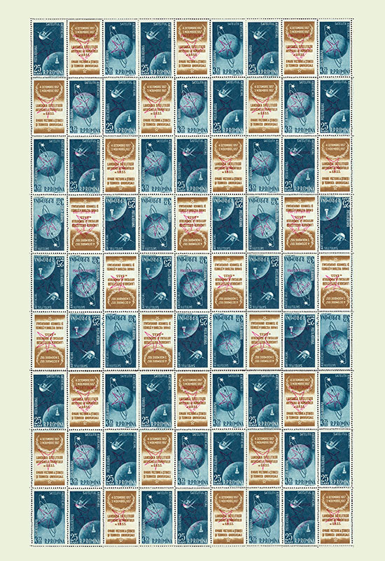
Fig. 16Prin intermediul Internetului am intrat în legătură cu dl. Nicolae Costan (mulţumiri şi pe această cale!) care mi-a pus la dispoziţie imaginea unui bloc vertical de 6 asemenea tripticuri. L-am folosit pe acesta pentru a reface imaginea, eventual pierdută în timp, a acelor cîtorva coli de tipar supratipărite "sub acoperire". Imaginea (Fig. 16) este de interes filatelic general, dar ar putea vreodată să le servească celor puţini care posedă, sau ar intra în posesia acestui material rar, dar cu cântec, deoarece el nu a fost realizat cu permisiunea autorităţilor poştale româneşti. Având o tinichea bine atârnată de coada, el nu poate fi prezentat la expoziţiile patronate de Federaţia Internaţională de Filatelie (FIP) şi este puţin probabil să fie vreodată cotat de vreun catalog internaţional serios.
O constatare autocritică şi o privire asupra filateliei epocii comuniste
Constatăm încă odată ambiguitatea de care dăm dovadă în colecţionarea, deseori cu multă aplecare, a materialului filatelic făcut intenţionat şi perfect legal astfel încât să ne lase gura apă. Vânând asemenea piese mai rare, stimulăm în continuare acest gen de superproducţii, pe care le criticăm dimineaţa, dar le căutăm cu lumânarea seara.
Băieţii "deştepţi" de la poştă, pe care i-am menţionat înainte, şi care ar fi putut la fel de bine să fie persoane de diferite vârste şi sexe, îşi vor înălţa un propriu monument filatelic în 1959, atunci când vor supratipări din nou ceva, şi tot în roşu, şi anume coliţa care a marcat un eveniment important, Centenarului mărcilor poştale româneşti (Mi. Block 40). Ei au "îmbogăţit" imaginea acestei coliţe cu inscripţia rombică "10 ani de comerţ filatelic de stat", rezultând coliţa catalogată ca Mi. Block 42, cu un tiraj de "numai" 20.000 de coliţe (Fig. 17).
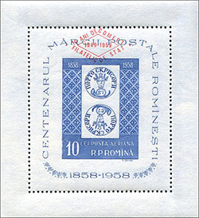
Fig. 17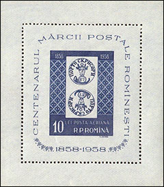
Fig. 18
Ne putem pune în mod justificat întrebarea cum se face că din totalul de 30.000 de coliţe ((sursă Michel)) Centenarului mărcilor poştale româneşti, emise în 1958 (Fig. 18), au putut fi supratipărite 20.000 de exemplare şi totuşi cele doar 10.000 de coliţe, rămase teoretic nesupratipărite, să se gaseasca şi azi cu destulă uşurinţă, la preţuri abordabile. Cele 20.000 de coliţe supratipărite sunt mai rare, lucru reflectat şi de cotelor lor de catalog, care sunt de aproape de 4 ori mai mari decât cele pentru coliţele nesupratipărite. Preţul coliţelor supratipărite este în contradicţie flagrantă cu tirajul, rămas mic, al coliţelor nesupratipărite, ceea ce mă duce la bănuiala evidentă că tirajele anunţate nu sunt cele reale.
Îmi pun deci întrebarea de unde provin aceste flagrante nepotriviri, deşi sunt perfect conştient că marea majoritate a celor iniţiaţi, colaboratori interni şi externi caracterizaţi printr-o deosebită discreţie, au aspirat cu ei în neant taine adânci şi păcate grele. Precum se vede însă, rezultatele activităţii acestora continuă să ne bântuie şi după o jumătate de secol ce s-a scurs de la săvârşirea faptelor, descrise în seria formată de cele patru articole publicate de mine pe acest site şi în philatelica.ro începând cu anul 2013.
Articol publicat în philatelica.ro, Nr. 1 (36) - ianuarie-martie 2015, p. 2 - 5, prima copertă şi p. 14.
Lower Manhattan, New York City, USA, ianuarie - iulie 2015

Published: July 5, 2015. Revised: Nov. 7, 2017. |